Hitta hit
Du hittar oss på Bärvägen 10, 123 45 Fruktköping. Vi finns i tegelhuset mitt emot nöjesparkens entré med fin utsikt över kanalen.
Fruit Taco Bar är ett etablerat cafe i centrala Fruktköping. Vårat koncept handlar om att äta frukt och bär på ett nytt och kreativt sätt, nämligen som en taco!
Hejsan, kul att du hittat hit till oss på Fruit Taco bar! Vi öppnade dörrarna till vårat cafe för första gången i april 2004. Grundaren Fagge Majsson ide om en ny samlingsplats i centrala Fruktköoing blev verklighet och sedan dess har ett spännande koncept tagit form, utvecklats och är ständigt i rörelse. En sak som består det är våran kärlek till det kreativa, nytänkande och och glädjefyllda köket. Ta med dig ditt kompisgäng eller din familj och prova något på våran fantastiska meny! Vi ses!
Du hittar oss på Bärvägen 10, 123 45 Fruktköping. Vi finns i tegelhuset mitt emot nöjesparkens entré med fin utsikt över kanalen.

Du når oss på telefonnumret 1234 56 78 90 eller genom att maila till fruittacobar@mail.se. Hör av dig om du vill boka bord, göra en beställning eller har några frågor.

Vi finns på sociala medier: fruittacobar. Bli inspererad eller dela med dig! Använd gärna taggarna #fruktansvärtgott och #fruittacobar, och tagga oss!

Vi har öppet alla dagar i veckan! Mån-Tors har vi öppet mellan 11-19 och Fre-Sön mellan 10-21! Välkommen!